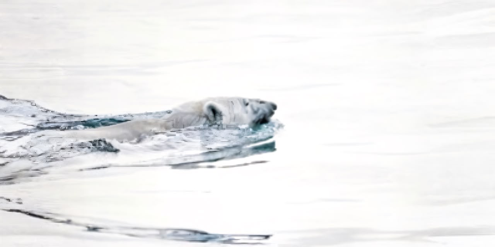

Wildlife Under Threat.
Wildlife across the world is facing increasing pressure from habitat destruction, climate change, pollution and human exploitation.
Arctic wildlife is particularly vulnerable because it depends on sea ice for hunting, travelling and survival.